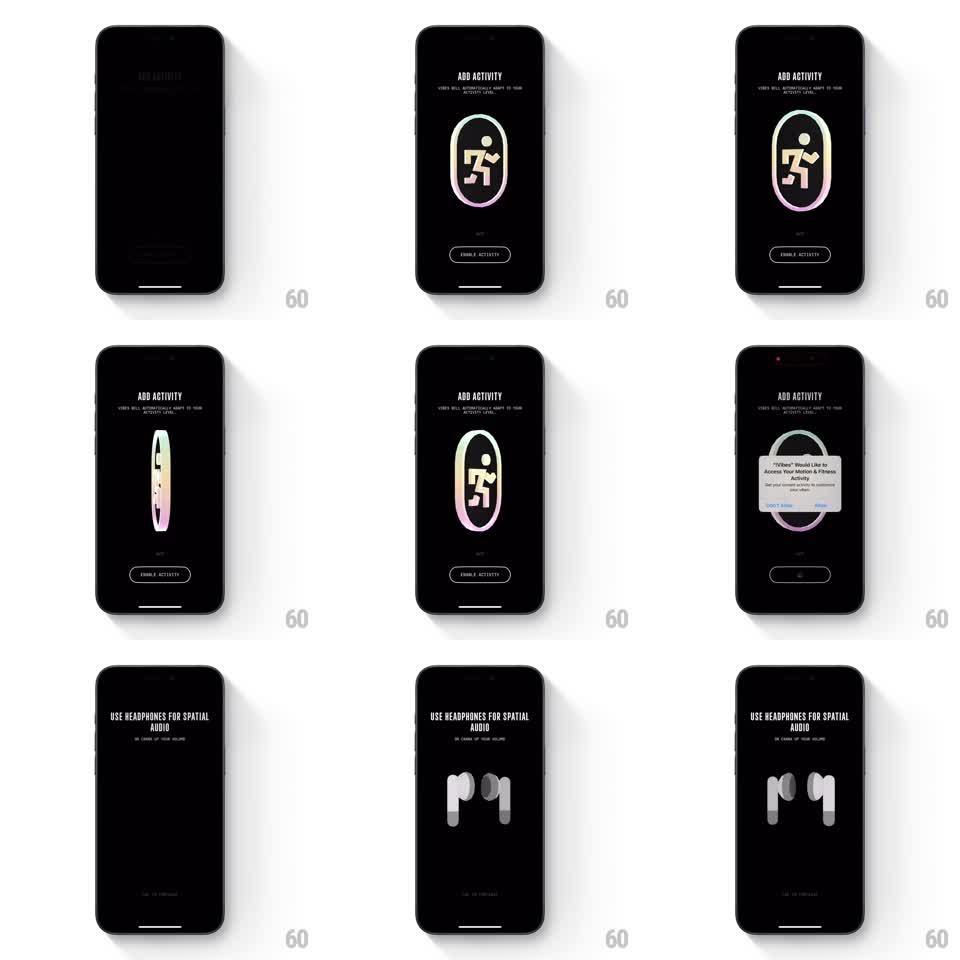

Media
Frame-by-frame

Rebuild this interaction 1:1: Not Boring Vibes' permission onboarding - black screens with slowly rotating 3D illustrations (a runner inside an oval ring, then headphones), an enable button, and the system permission dialog arriving mid-flow.

Rebuild this interaction 1:1: Not Boring Vibes' permission onboarding - black screens with slowly rotating 3D illustrations (a runner inside an oval ring, then headphones), an enable button, and the system permission dialog arriving mid-flow. ## Integration Integration: stack-agnostic spec - springs given as stiffness/damping, timed motions as duration + curve; map every value to your framework and animation library of choice. ## Scene Black background throughout. Screen 1: "ADD ACTIVITY" condensed title with small supporting copy, a 3D illustration of a runner figure inside a vertical oval ring (soft pink-to-blue gradient finish), and an outlined "ENABLE ACTIVITY" pill button. The system "Motion & Fitness Activity" dialog appears over it. Screen 2: "USE HEADPHONES FOR SPATIAL AUDIO" with a 3D headphones render and a "SKIP TO PURCHASE" text link at the bottom. ## Motion spec Pattern: rotating 3D illustration with system-dialog interruption. - Each illustration rotates continuously on its vertical axis (~8s per revolution, linear) - the oval ring and the headphones both show their profile then their face. - Screen content fades in (400ms) after a hard cut from black; title first, illustration scaling 0.9 to 1.0 with it, button last (100ms stagger). - Tap ENABLE ACTIVITY: the button flashes (100ms), and the iOS system dialog slides up over the dimmed screen; the 3D illustration keeps rotating behind the dim. - Dialog dismissed: cut to the next permission screen and repeat the same entrance. - The final screen's skip link fades in only after the headphones have faced forward once (~2s). ## Calibration - The rotation is the only ambient motion - the UI chrome stays perfectly still against it. - Keep illustrations centered and large (about half the screen height); small renders lose the 3D material read. ## Reduced motion Illustrations hold at a three-quarter angle; screens crossfade. ## Don't miss - The illustration finish is an iridescent gradient (pink, peach, ice blue) on black - flat color kills it. - The system dialog is real and modal; do not fake it with a custom card.